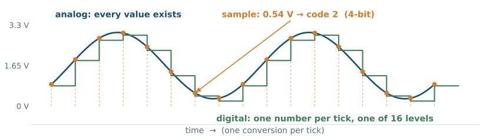
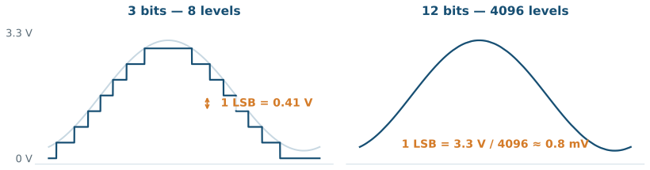
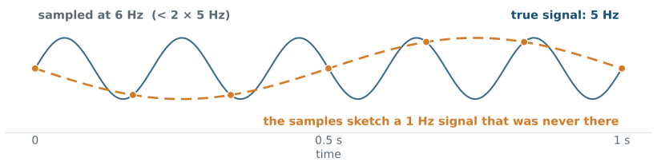
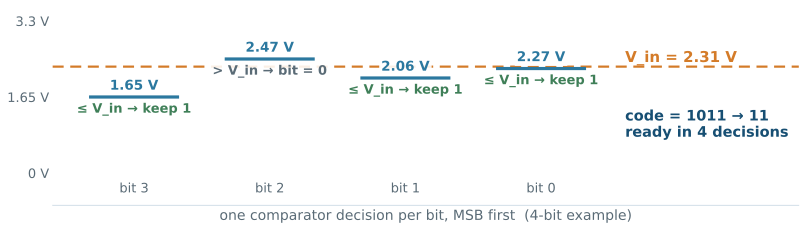
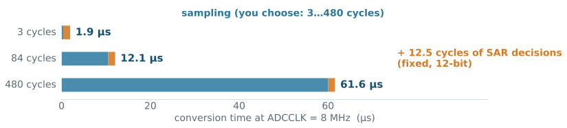

L10 - Analog-to-Digital Conversion
The pin was neither HIGH nor LOW. The hardware answered with a number anyway—while your program did something else.
By the end, you will know what 2867 means, how the hardware found it in twelve guesses, and how to turn a knob, a light level, or a temperature into brightness and motion.
01 WEEKS 4-5: pins wrote and read digital levels—high or low, nothing between.
02 WEEKS 6-7: events interrupt the program; hardware counters keep time.
03 L08-L09: timer channels generated PWM and timestamped edges—still all digital.
04 TODAY: the last face of the pin—voltages between the levels.
01 Explain sampling, quantization, and resolution—and read the 0–4095 scale fluently.
02 Trace the SAR conversion and its timing from the 16 MHz clock.
03 Configure ADC1: channel, sampling time, single vs continuous conversion.
04 Convert counts to millivolts with integer math, and counts to control (PWM).
05 Verify conversions in the SFR view: DR, EOC, CONT.
Thirty-second check on the timer lectures:
1 Which register turned a number into LED brightness?
2 How did we measure an unknown PWM signal?
3 What can none of that hardware tell us about a voltage?
CCR owned the duty; capture channels timestamped edges into CCR; and every input so far reported only high or low—never how much.
01 THE KNOB: a potentiometer’s position is a voltage, 0 to 3.3 V.
02 THE LIGHT: an LDR in a divider turns brightness into volts.
03 THE HEAT: thermistors—and a sensor inside the chip—speak in millivolts.
04 THE BATTERY: monitoring a supply means reading its voltage.
All of these are voltages. One peripheral reads them all: the analog-to-digital converter.

Three verbs, every conversion: sample (freeze the voltage), quantize (pick the nearest level), encode (store the number).

Our ADC has 12 bits: 4096 levels across 0–3.3 V. The staircase is finer than the noise—for us, effectively smooth.
mV = raw × 3300 / 4095
raw = 0 → 0 mV raw = 2048 → 1650 mV
raw = 4095 → 3300 mV raw = 2867 → 2311 mV01 Integer math first: (raw * 3300u) / 4095u fits comfortably in uint32_t.
02 Full scale (4095) maps to full voltage (3300 mV)—the endpoint convention.
03 Millivolts keep everything integer; convert to float only at the display edge.
1 What raw value corresponds to 0.825 V?
2 Raw reads 3100—how many millivolts?
3 Why compute in millivolts instead of volts-as-float?
0.825 V is a quarter of full scale → ≈ 1024. 3100 × 3300 / 4095 = 2498 mV. And integers are exact, fast, and safe anywhere—including inside interrupt callbacks.

Sample slower than twice the fastest content and the samples lie—an alias. For knobs and light sensors we are safely slow; for audio and waveforms this rule bites.
In-lecture demo: aliasing, interactively.

Binary search in silicon: one comparator decision per bit, MSB first. Our 12-bit ADC: twelve decisions per conversion.
In-lecture demo: step through a conversion.

01 The ADC clock: PCLK2 16 MHz ÷ 2 = 8 MHz (divider in CCR; max 36 MHz).
02 High source impedance → the hold capacitor charges slowly → choose longer sampling. Our default: 84 cycles → ≈ 12 µs.
01 The STM32F401RE has one ADC (ADC1) with 16 external channels—one converter, many pins.
02 PA0 is channel IN0—and the Arduino header’s A0. Our knob lives there.
03 Three internal channels need no wiring at all: a temperature sensor, V_REFINT, and V_BAT.
Channels share the one SAR core. Reading two sensors means choosing which door opens for each conversion.
The pin’s fourth personality, after input, output, and alternate function:
01 MODER bits = 11 — analog mode: the digital input path is disconnected entirely.
02 No pull-ups, no ReadPin, no AF—the pin wires straight to the ADC’s multiplexer.
03 The full GPIO story, complete: 00 input · 01 output · 10 alternate · 11 analog.
L04 promised the MODER table had four rows. Today the last row earns its keep.
Deep dive: RM0368 Rev 6, GPIOx_MODER — p. 158.
01 SINGLE: software says go (SWSTART), the ADC converts once and stops. One question, one answer.
02 CONTINUOUS: the ADC restarts itself forever—DR always holds the freshest value.
03 SCAN: convert a whole sequence of channels in turn (with DMA—a later lecture).
We use single mode and ask on our schedule—the Week 7 tick decides when. Continuous returns tonight as SFR-view evidence.
01 Click PA0 → ADC1_IN0 (the pin turns analog—check MODER later).
02 In Analog → ADC1: enable IN0.
03 Parameters: Resolution 12 bits, Continuous Disabled, End Of Conversion single conversion.
04 Rank 1 → Channel 0, Sampling Time 84 Cycles. Generate; read the init before writing code.
hadc1.Instance = ADC1;
hadc1.Init.ClockPrescaler = ADC_CLOCK_SYNC_PCLK_DIV2; // 16 MHz -> 8 MHz
hadc1.Init.Resolution = ADC_RESOLUTION_12B; // 0..4095
hadc1.Init.ContinuousConvMode = DISABLE; // one shot per start
hadc1.Init.EOCSelection = ADC_EOC_SINGLE_CONV; // flag per conversion
hadc1.Init.DataAlign = ADC_DATAALIGN_RIGHT;
hadc1.Init.NbrOfConversion = 1;
HAL_ADC_Init(&hadc1);
ADC_ChannelConfTypeDef sConfig = {0};
sConfig.Channel = ADC_CHANNEL_0; // PA0 = IN0 = A0
sConfig.Rank = 1;
sConfig.SamplingTime = ADC_SAMPLETIME_84CYCLES; // ~12 us total
HAL_ADC_ConfigChannel(&hadc1, &sConfig);Resolution writes RES in CR1; SamplingTime writes SMPR2; the channel lands in SQR3.
Deep dive: UM1725 Rev 8, ADC generic driver — p. 56.
HAL_ADC_Start(&hadc1); // SWSTART: go
HAL_ADC_PollForConversion(&hadc1, 2); // wait for EOC (~12 us)
uint16_t raw = HAL_ADC_GetValue(&hadc1); // read DR (clears EOC)
uint16_t mv = (uint16_t)((raw * 3300u) / 4095u);01 The third flag family: UIF (L07), CC1IF (L09), now EOC in ADC1->SR.
02 Reading DR clears EOC—the same read-to-acknowledge pattern.
03 12 µs is nothing on a human timescale—polling is honest here, not lazy.
The whole course in four lines—analog in, analog out:
if (tick_10ms_flag) { // Week 7 schedules the reads
tick_10ms_flag = 0;
uint16_t raw = adc_read_in0(); // today: 0..4095
uint32_t duty = (raw * 999u) / 4095u; // map to L08's ARR
__HAL_TIM_SET_COMPARE(&htim2, TIM_CHANNEL_1, duty); // LD2 brightness
}Knob voltage → number → compare register → PWM duty → average voltage → brightness. Two converters facing each other, your code in between.
HAL_ADC_Start_IT(&hadc1); // one conversion, then interrupt
void HAL_ADC_ConvCpltCallback(ADC_HandleTypeDef *hadc)
{
if (hadc->Instance == ADC1) {
g_raw = (uint16_t)HAL_ADC_GetValue(hadc); // integer only here
}
}01 The Week 6 path, one more source: enable ADC global interrupt in NVIC first.
02 Start one conversion per tick; the callback stores, the main loop consumes.
03 Continuous + interrupt would fire every 12 µs—83 000 interrupts per second. Pace it.
The pot sits exactly at center. With the L08 numbers (ARR = 999 LED, servo 1000–2000 µs):
1 What does raw read, and how many millivolts is that?
2 What LED duty does (raw * 999) / 4095 command?
3 What servo pulse does 1000 + (raw * 1000) / 4095 command—and what angle?
≈ 2048 → 1650 mV. Duty ≈ 499 — half brightness. Pulse ≈ 1500 µs → 90°, dead center. The knob is the servo now.
| Register | Role |
|---|---|
ADC1->SR |
EOC — result ready · OVR — you read too slowly |
ADC1->CR1 |
RES resolution · scan mode |
ADC1->CR2 |
ADON power · CONT continuous · SWSTART go · alignment |
ADC1->SMPR2 |
sampling time per channel, IN0–IN9 |
ADC1->SQR3 |
which channel converts (rank 1) |
ADC1->DR |
the result, 0…4095 — reading it clears EOC |
01 Pause after a read: ADC1->DR holds your raw value; turn the knob, step, read again.
02 Set CONT in CR2 and SWSTART from the SFR view: DR now streams by itself—no code running.
03 CR1 bits 25:24 read 00 — that is RES saying 12-bit.
04 GPIOA->MODER bits 1:0 read 11 — PA0 belongs to the analog world.
A successful build proves none of this. The SFR view does.
01 PIN LEFT DIGITAL: MODER not 11—you sample a pin the GPIO block still drives.
02 THE 5 V HABIT: Arduino formulas assume 5 V and 1023. Here: 3.3 V, 4095—and 5 V on an analog pin is damage, not data.
03 OFF-BY-ONE SCALE: divide by 4096 or 1023 and full scale never reads 100 %.
04 IMPEDANCE IGNORED: big resistances with 3-cycle sampling—the hold capacitor never charges; readings sag.
05 FLOAT IN THE CALLBACK: convert to millivolts with integers; pretty-print floats elsewhere.
06 POLLING BLIND: PollForConversion with no conversion started, or EOCSelection left unset—waits forever or returns stale data.
Read the knob, command the servo. Read the light, dim LD2. One ADC, two sensors—driving the actuators you built in L08.
You will show:
raw and millivolts live in the debugger, matching your hand calculation;✓ Explain sample → quantize → encode with the bridge figure.
✓ Convert counts ↔︎ millivolts, in your head, with integers.
✓ Trace a SAR conversion and budget its time from 8 MHz.
✓ Configure a channel and read it by polling—and by interrupt.
✓ Verify DR, EOC, CONT, and the analog MODER in the SFR view.
Next: the bridge to assembly—what the compiler made of everything you have written.
The knob reads raw = 1241 on the 12-bit scale.
01 VOLTAGE: How many millivolts is that?
02 CONTROL: What LED duty does the L08 map command?
03 REGISTER: Which register held 1241, and what cleared the ready flag?
04 HARDWARE: How many comparator decisions produced this number?
Every concept in this lecture, with page-linked sources: academic references.
EE5203 - L10